Seven pages, the brand, every icon, the lists and their card formats, the Power BI visuals with placeholders to use until the reports are live, and the order to build it in.
Each page opens with the CCS hub bar and the Frontier navigation. Turn on Web part labels on any page to see which web part builds each block. Links to CCS pages are switched off in this pack.
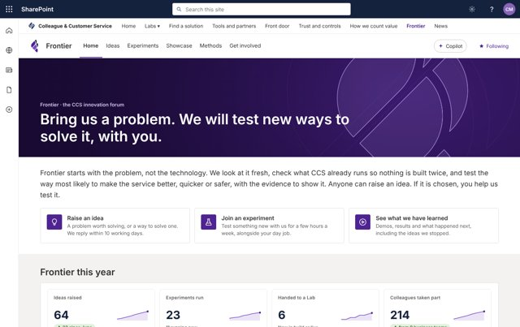
/sites/ccs-frontierThe front of Frontier: what we are testing, how we work, results and events.
Open page ·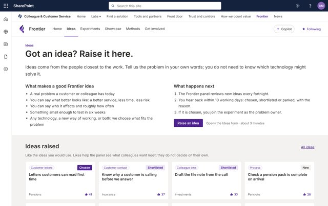
SitePages/ideas.aspxAnyone raises a problem; colleagues like the ideas they would use.
Open page ·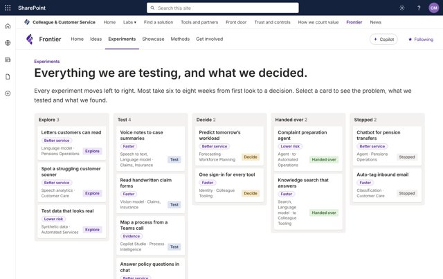
SitePages/experiments.aspxEvery experiment on one board, outcome first, from Explore to a decision.
Open page ·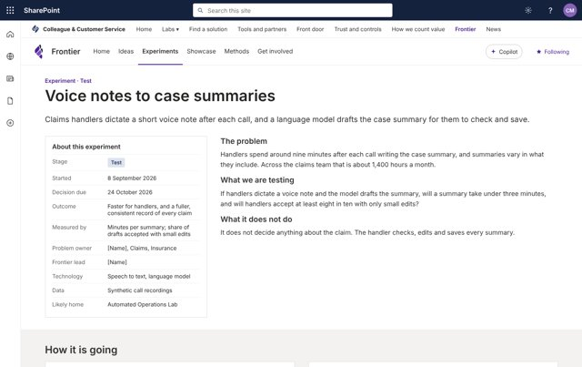
SitePages/experiments/{experiment}.aspxOne per experiment, from a template: the problem, the outcome, the evidence.
Open page ·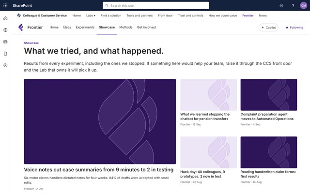
SitePages/showcase.aspxResults, demos and what each Lab has taken on.
Open page ·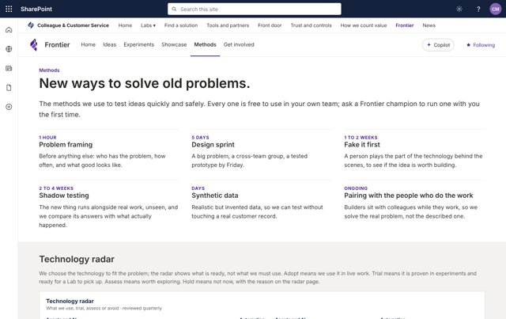
SitePages/methods.aspxHow we test, the technology radar and the toolkit.
Open page ·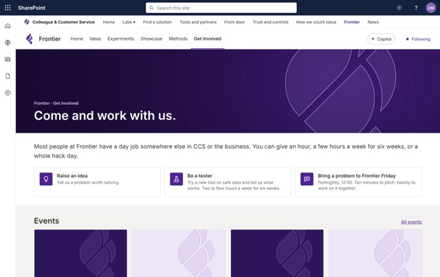
SitePages/get-involved.aspxWays in, events, champions and the community.
Open page ·Details for each step are in the build guide.
Frontier communication site plus a Frontier Team site in Teams, both associated with the CCS hub.
Theme, logo, header, footer, navigation; upload the assets to BrandAssets/frontier.
Ideas, Experiments, Radar, Methods and Documents, with the card and column formats.
Seven pages from the build sheets, placeholders where Power BI will go.
One report, four visuals, Deneb specs; swap each placeholder when it is live.
Idea decisions, experiment pages and channels, handover to a Lab.
Accessibility, permissions, the handover route, sample data removed.
The theme sets every button, link and section colour; these values are for anything made by hand. The CCS mark stays in the hub bar and footer, so Frontier always reads as part of CCS.
Tiles are the 40 px purple squares on the pages, drawn at 160 px for Quick links custom images. Each icon also comes as purple and white SVG and 96 px PNG.
Use the placeholder in an Image web part where each visual goes, then replace it with the Power BI or Embed web part. Half-width charts are built on a 640 × 360 report page so their text stays readable in a column. Specs, sample data, config and previews are in power-bi/deneb.
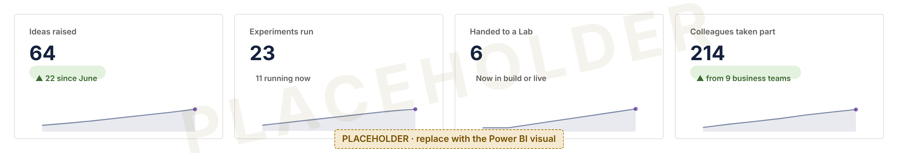
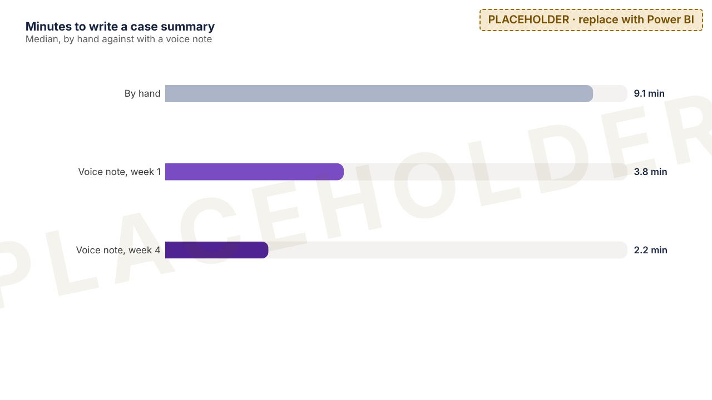
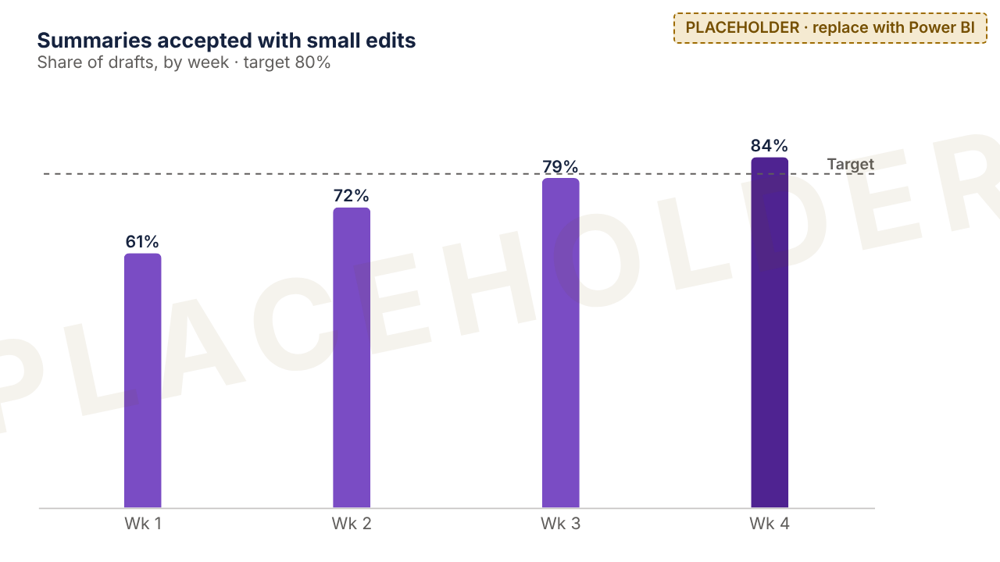
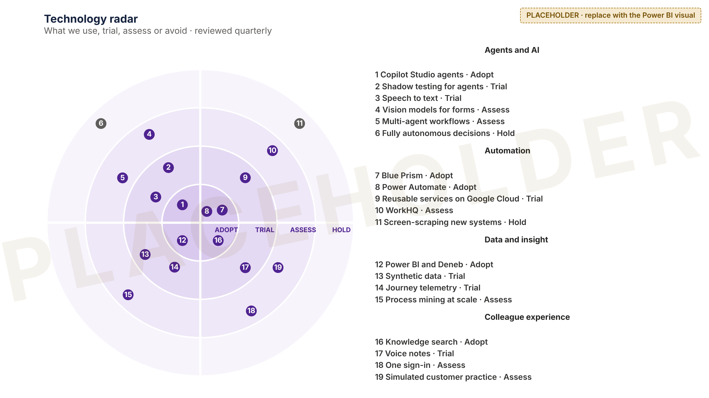
Everything on the pages that changes comes from a list, so nobody edits a page to update a status. Definitions are in lists-and-formatting.
| List | Holds | Views and formats |
|---|---|---|
| Ideas | Title, Outcome, Theme, Business area, The problem, Status | Gallery "Most liked" · tile-ideas.json · Likes on |
| Experiments | Title, Stage, Outcome, Technology, Sponsor, Handed to, Outcome achieved, Now, Experiment page, From idea | Board by Stage · tile-experiment-board.jsonGallery "Handed over" · tile-handed-over.json |
| Radar | Title, Number, Quadrant, Ring, Why | Feeds the technology radar |
Documents/
{experiment}/
plan/ brief, success measure
evidence/ published results
handover/ for the receiving LabMethods/ problem-framing-canvas.pptx design-sprint-plan.docx experiment-brief-template.docx shadow-test-results-template.xlsx synthetic-data-request.docx
Documents/
General/
{experiment}/ one channel each:
drafts, sandbox notes,
recordingsBrandAssets/frontier/ marks/ logos/ backgrounds/ icons/ placeholders/